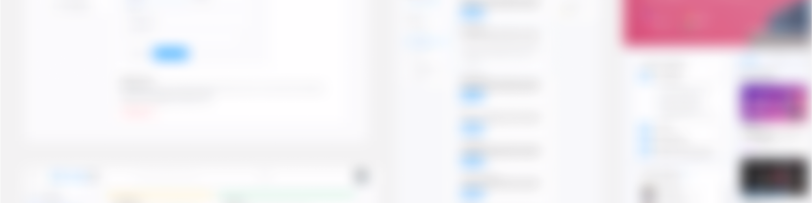

The Future School
Ed-tech platform to help bridge the gap between the learner & employer.**All work is under NDA, but I'd be happy to discuss my takeaways and learnings from a high level at tiffanytnguy@berkeley.edu.
Role
UX/UI Intern
Tools
Adobe IllustratorFigma
Timeline
~1 month, Mar to May 2020

Overview
I focused on creating web app screens and additional features, aimed to provide a variety of content to help individuals achieve their self-improvement and learning goals and to offer creators a variety of ways to display their content.
Additionally, I designed the landing pages to increase traffic and gain potential clients.
Additionally, I designed the landing pages to increase traffic and gain potential clients.
Learnings and Takeaways
01 Updating and using design systems.
Not only did this help maintain a cohesive design across our app, but I learned the technical fine-tuning of making components and styling, taking note of dimensions and margins for easier developer-handoff.
02 (over)Communicate blockers to your team asap!
With presentations, it’s okay to not have everything solidified and there’s a chance to discuss more on a feasible feature.
03 When presenting designs, engage in a learning mindset.
With design presentations, I laid out the user problem and user goals, and research, before presenting the final solution. The transparency of my design process brought greater aligned insight and value to the team and business!
04 Equip a learning and career growth mindset through challenging comfort zones and proactively learning.
At the beginning of my internship, I was given an onboarding doc to go over my goals and creating actionable steps to achieve them.
Not only did this help maintain a cohesive design across our app, but I learned the technical fine-tuning of making components and styling, taking note of dimensions and margins for easier developer-handoff.
02 (over)Communicate blockers to your team asap!
With presentations, it’s okay to not have everything solidified and there’s a chance to discuss more on a feasible feature.
03 When presenting designs, engage in a learning mindset.
With design presentations, I laid out the user problem and user goals, and research, before presenting the final solution. The transparency of my design process brought greater aligned insight and value to the team and business!
04 Equip a learning and career growth mindset through challenging comfort zones and proactively learning.
At the beginning of my internship, I was given an onboarding doc to go over my goals and creating actionable steps to achieve them.
Big Thank You
Having just recently transitioned into Product Design from Graphic Design, I went into this internship thinking I’d work on a specific portion of a product. Instead, I got to get a glimpse of not only building a product, but also a company and working cross-functionally with developers. Attending several engineering presentations provided me greater understanding of constructing the final product live and noting how to work with developers.
As I just began my product design career, I didn’t know what to expect at the start of the internship. At best, I hoped to gain a sense of working on a real product that would later be shipped out. But instead, I found myself enveloped in exploring the many spaces in product design — the business side, working cross-functionally, design systems, etc.
I’d like to thank the team, especially when I had career dilemmas and needed a slight push when it came to achieving my learning goals.
As I just began my product design career, I didn’t know what to expect at the start of the internship. At best, I hoped to gain a sense of working on a real product that would later be shipped out. But instead, I found myself enveloped in exploring the many spaces in product design — the business side, working cross-functionally, design systems, etc.
I’d like to thank the team, especially when I had career dilemmas and needed a slight push when it came to achieving my learning goals.